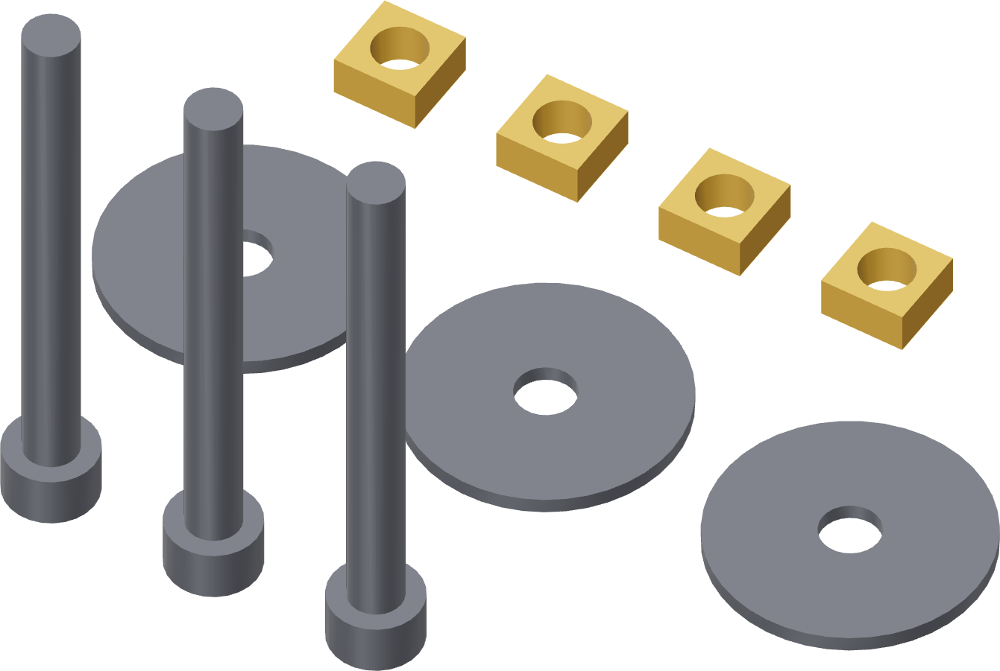

Three bolts, four nuts
The T handle uses two bolted jaws. The press lever uses the third bolt and a pair of jammed square nuts.

| Hardware | Qty | Where |
|---|---|---|
| M5 × 50 socket-head screw | 3 | 2 jaw screws, 1 press pivot. |
| M5 × 0.8 square nut, 8 mm across flats × 4 mm thick | 4 | 2 jaw nuts, 2 pivot jam nuts. |
| M5 fender washer, Ø25 mm × 1.5 mm, Ø5.5 mm bore | 3 | 2 jaw load spreaders, 1 pivot thrust washer. |
The identified bolts, square nuts and washers are already stocked. The fixture uses no heat-set inserts.